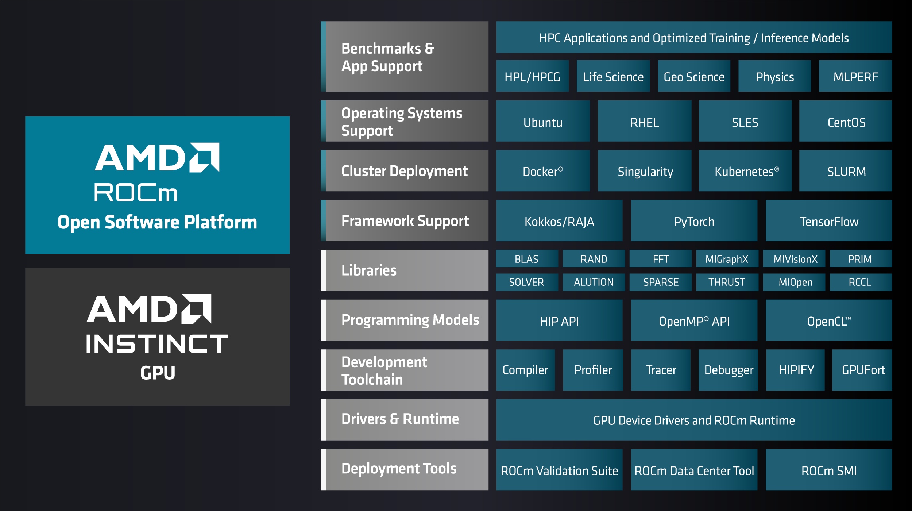

Using ROCm for HPC#
2024-06-21
11 min read time
The ROCm open-source software stack is optimized to extract high-performance computing (HPC) workload performance from AMD Instinct™ accelerators while maintaining compatibility with industry software frameworks.
ROCm enhances support and access for developers by providing streamlined and improved tools that significantly increase productivity. Being open-source, ROCm fosters innovation, differentiation, and collaboration within the developer community, making it a powerful and accessible solution for leveraging the full potential of AMD accelerators’ capabilities in diverse computational applications.
For more information, see What is ROCm?.
For guidance on installing ROCm, see ROCm installation for Linux. See the Compatibility matrix for details on hardware and operating system support.
Some of the most popular HPC frameworks are part of the ROCm platform, including those to help parallelize operations across multiple accelerators and servers, handle memory hierarchies, and solve linear systems.
The following catalog of GPU-accelerated solutions includes a vast set of platform-compatible HPC applications, including those for astrophysics, climate and weather, computational chemistry, computational fluid dynamics, earth science, genomics, geophysics, molecular dynamics, and physics computing.
Refer to the resources in the following table for instructions on building, running, and deploying these applications on ROCm-capable systems with AMD Instinct accelerators. Each build container provides parameters to specify different source code branches, release versions of ROCm, OpenMPI, UCX, and Ubuntu versions.
Application domain |
HPC application |
Description |
|---|---|---|
Physics |
The Chroma package supports data-parallel programming constructs for lattice field theory and in particular lattice QCD. It uses the SciDAC QDP++ data-parallel programming (in C++) that presents a single high-level code image to the user, but can generate highly optimized code for many architectural systems including single node workstations, multi and many-core nodes, clusters of nodes via QMP, and classic vector computers. |
|
Grid is a library for lattice QCD calculations that employs a high-level data parallel approach while using a number of techniques to target multiple types of parallelism. The library currently supports MPI, OpenMP and short vector parallelism. The SIMD instructions sets covered include SSE, AVX, AVX2, FMA4, IMCI and AVX512. Recent releases expanded this support to include GPU offloading. |
||
The MILC Code is a set of research codes developed by MIMD Lattice Computation (MILC) collaboration for doing simulations of four dimensional SU(3) lattice gauge theory on MIMD parallel machines scaling from single-processor workstations to HPC systems. The MILC Code is publicly available for research purposes. Publications of work done using this code or derivatives of this code should acknowledge this use. |
||
PIConGPU (Particle-in-cell on Graphics Processing Units) is an Open Source simulations framework for plasma and laser-plasma physics used to develop advanced particle accelerators for radiation therapy of cancer, high energy physics and photon science. |
||
Astrophysics |
An astrophysical simulation code developed for the extreme environments encountered in astrophysical systems. |
|
Geophysics |
SPECFEM3D Cartesian simulates acoustic (fluid), elastic (solid), coupled acoustic/elastic, poroelastic or seismic wave propagation in any type of conforming mesh of hexahedra (structured or not.) It can, for instance, model seismic waves propagating in sedimentary basins or any other regional geological model following earthquakes. It can also be used for non-destructive testing or for ocean acoustics. |
|
Molecular dynamics |
GROMACS is a versatile package to perform molecular dynamics, i.e. simulate the Newtonian equations of motion for systems with hundreds to millions of particles. This AMD container is based on a released version of GROMACS modified by AMD. This container only supports up to a 8 GPU configuration |
|
LAMMPS is a classical molecular dynamics code with a focus on materials modeling. It’s an acronym for Large-scale Atomic/Molecular Massively Parallel Simulator. |
||
Computational fluid dynamics |
Neko is a portable framework for high-order spectral element flow simulations. Written in modern Fortran, Neko adopts an object-oriented approach, allowing multi-tier abstractions of the solver stack and facilitating various hardware backends ranging from general-purpose processors, CUDA and HIP enabled accelerators to SX-Aurora vector processors. |
|
nekRS is an open-source Navier Stokes solver based on the spectral element method targeting classical processors and accelerators like GPUs. |
||
Computational chemistry |
Library designed for efficient lattice QCD computations on accelerators. It includes optimized Dirac operators and a variety of fermion solvers and conjugate gradient (CG) implementations, enhancing performance and accuracy in lattice QCD simulations. |
|
Electronic structure |
CP2K is a quantum chemistry and solid state physics software package that can perform atomistic simulations of solid state, liquid, molecular, periodic, material, crystal, and biological systems. This AMD container, based on a released version of CP2K, is an AMD beta version with ongoing optimizations. |
|
Quantum Monte Carlo Simulation |
QMCPACK is an open-source production-level many-body ab initio Quantum Monte Carlo code for computing the electronic structure of atoms, molecules, 2D nanomaterials and solids. The solid-state capabilities include metallic systems as well as insulators. QMCPACK is expected to run well on workstations through to the latest generation supercomputers. Besides high performance, particular emphasis is placed on code quality and reproducibility. |
|
Climate and weather |
The Model for Prediction Across Scales (MPAS) is a collaborative project for developing atmosphere, ocean, and other earth-system simulation components for use in climate, regional climate, and weather studies. |
|
Benchmark |
HPL, or High-Performance Linpack, is a benchmark which solves a uniformly random system of linear equations and reports floating-point execution rate. This documentation supports the implementation of the HPL benchmark on top of AMD’s ROCm platform. |
|
Benchmark that highlights the convergence of HPC and AI workloads by solving a system of linear equations using novel, mixed-precision algorithms. |
||
HPCG, or the High Performance Conjugate Gradient Benchmark complements the High Performance LINPACK (HPL) benchmark. The computational and data access patterns of HPCG are designed to closely match a broad set of important applications not represented by HPL, and to incentivize computer system designers to invest in capabilities that will benefit the collective performance of these applications. |
||
Tools and libraries |
Base container for GPU-aware MPI with ROCm for HPC applications. This project provides a boilerplate for building and running a Docker container with ROCm supporting GPU-aware MPI implementations using OpenMPI or UCX. |
|
Kokkos is a programming model in C++ for writing performance portable applications for use across HPC platforms. It provides abstractions for both parallel execution of code and data management. Kokkos is designed to target complex node architectures with N-level memory hierarchies and multiple types of execution resources. |
||
PyFR is an open-source Python based framework for solving advection-diffusion type problems on streaming architectures using the Flux Reconstruction approach of Huynh. The framework is designed to solve a range of governing systems on mixed unstructured grids containing various element types. It is also designed to target a range of hardware platforms via use of an in-built domain specific language derived from the Mako templating engine. |
||
RAJA is a library of C++ software abstractions, primarily developed at Lawrence Livermore National Laboratory (LLNL), that enables architecture and programming model portability for HPC applications. |
||
The Trilinos Project is an effort to develop algorithms and enabling technologies within an object-oriented software framework for the solution of large-scale, complex multi-physics engineering and scientific problems. |
To learn about ROCm for AI applications, see Using ROCm for AI.